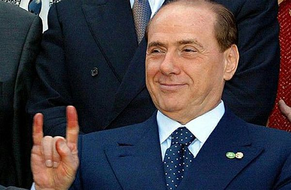
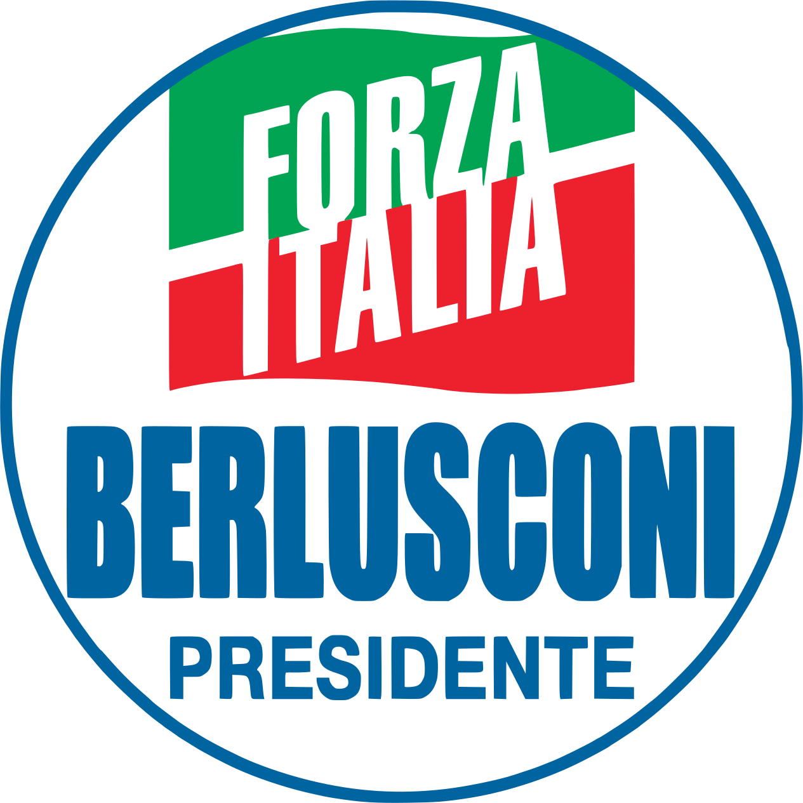
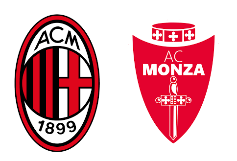

BIOGRAFIA
Silvio Berlusconi (Milano, 29 settembre 1936 – Milano, 12 giugno 2023) è stato un imprenditore e politico italiano, fondatore del gruppo Fininvest e quattro volte Presidente del Consiglio dei ministri della Repubblica Italiana.
Era soprannominato il Cavaliere, avendo ricevuto l'ordine al merito del lavoro nel 1977, dal quale si auto-sospese a seguito di una condanna penale nel 2014. Dopo aver iniziato la sua attività imprenditoriale nel campo dell'edilizia, nel 1975 costituì la holding Fininvest e, nell'ambito di quest'ultima, la società di produzione multimediale Mediaset (1993), per cui è maggiormente noto (oggi MFE). Attraverso Fininvest, acquisì altre partecipazioni significative, tra cui il 30% di Banca Mediolanum, la maggioranza di Arnoldo Mondadori Editore, il Teatro Manzoni, l'AC Monza e, dal 1986 al 2017, l'AC Milan, di cui fu anche presidente.

Silvio Berlusconi al vertice UE
CHE HA FATTO?
CARRIERA POLITICA

CARRIERA DA PRESIDENTE
